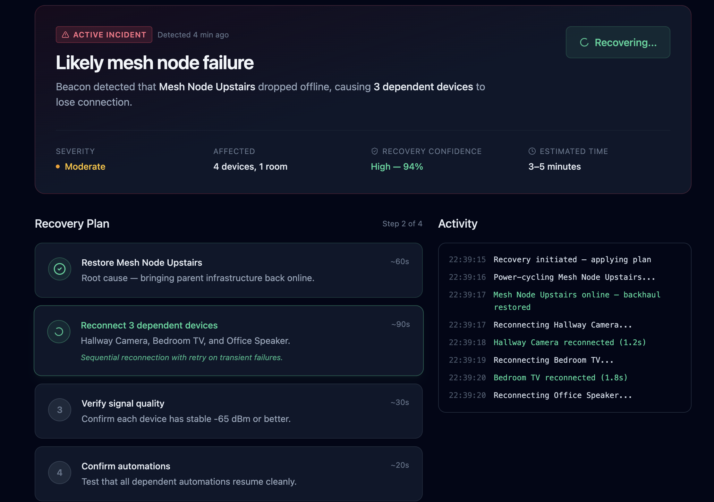
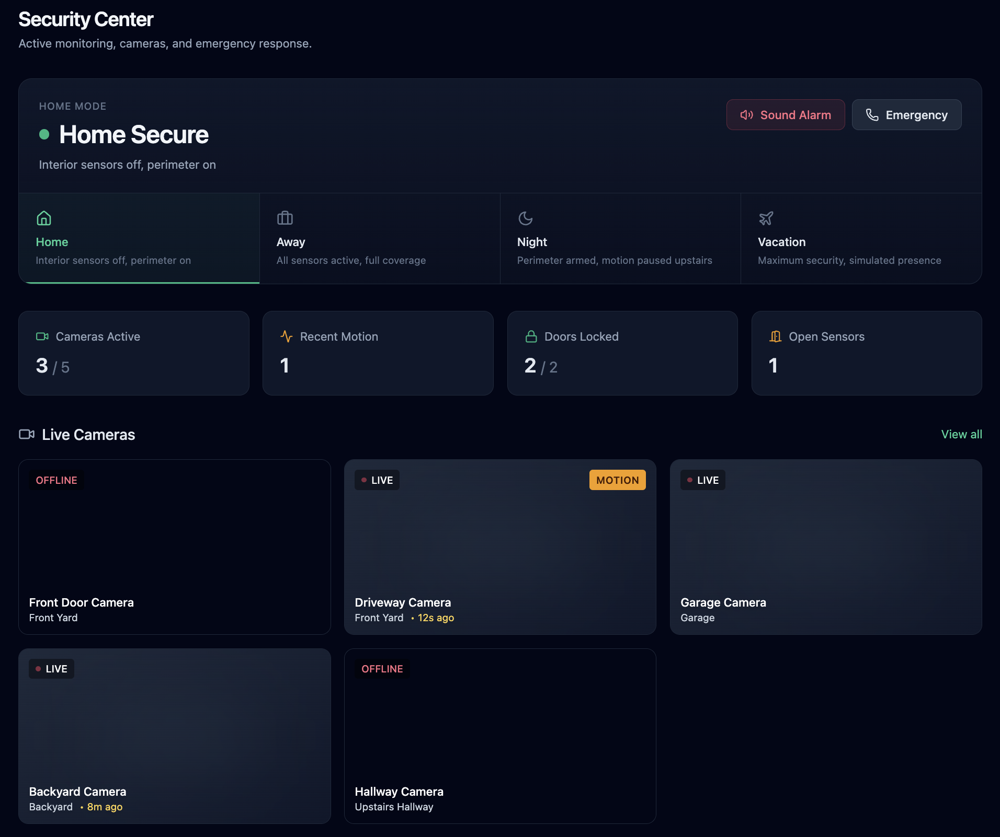
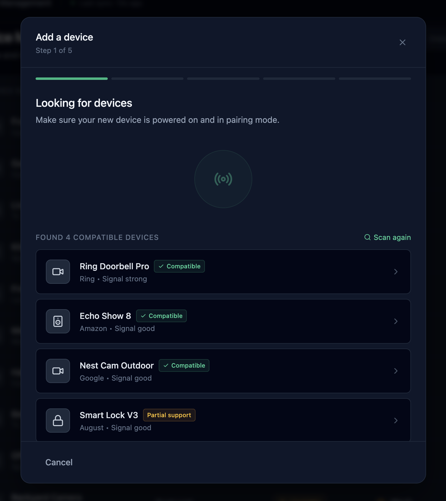
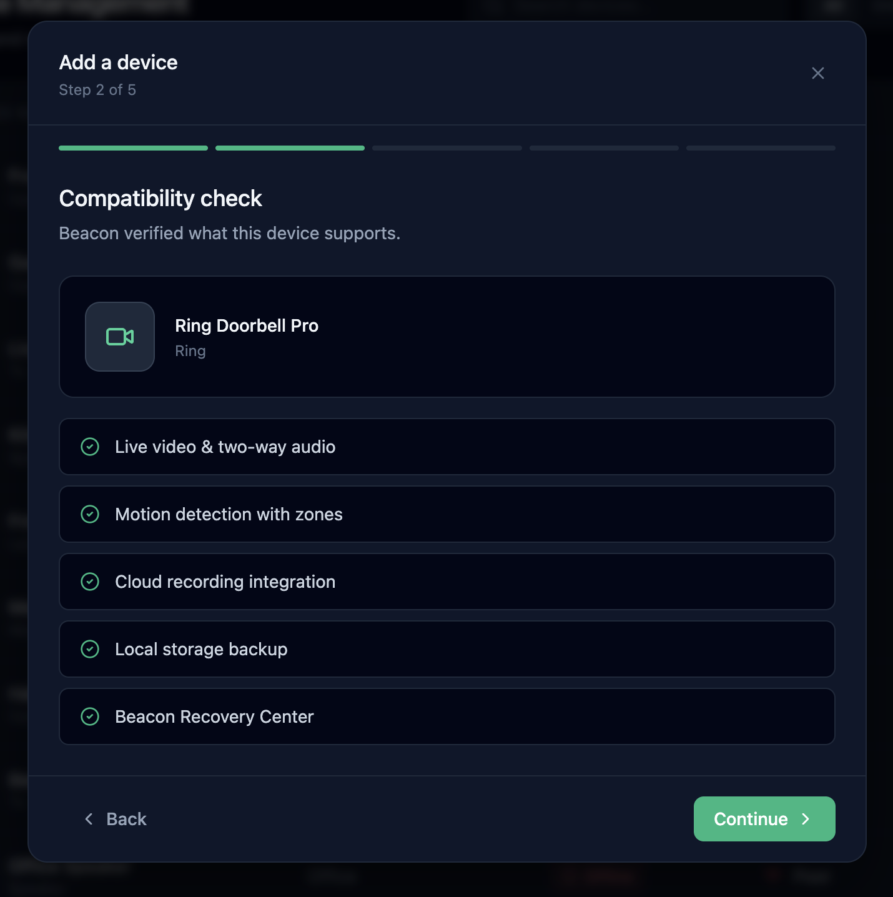
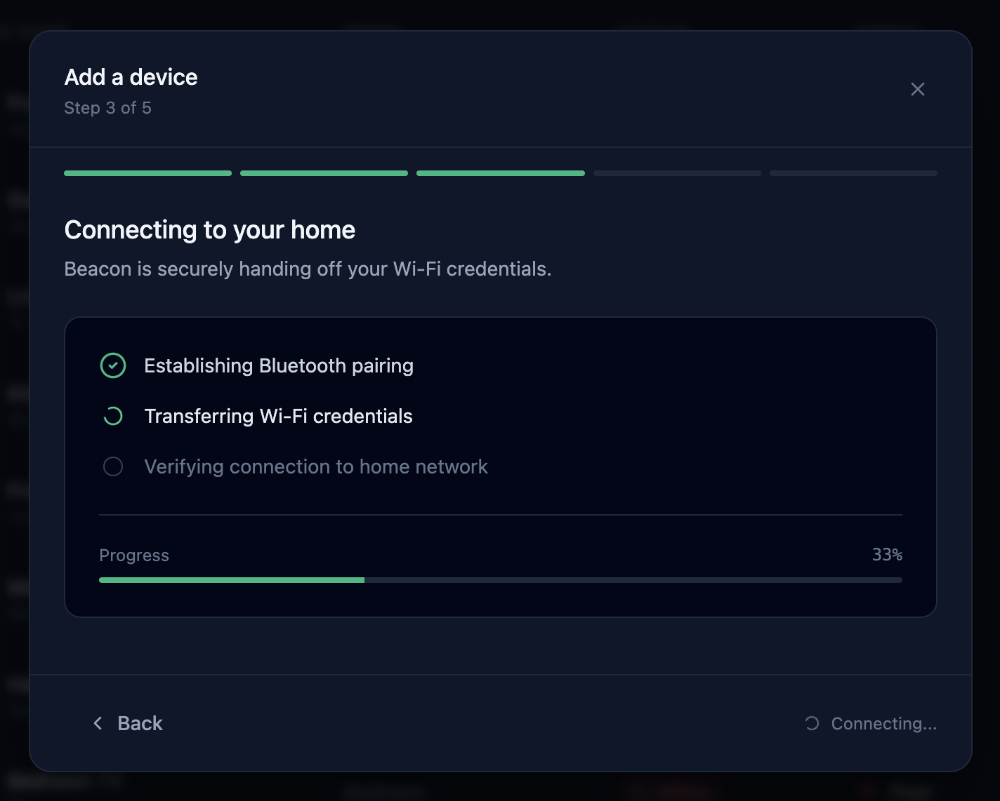
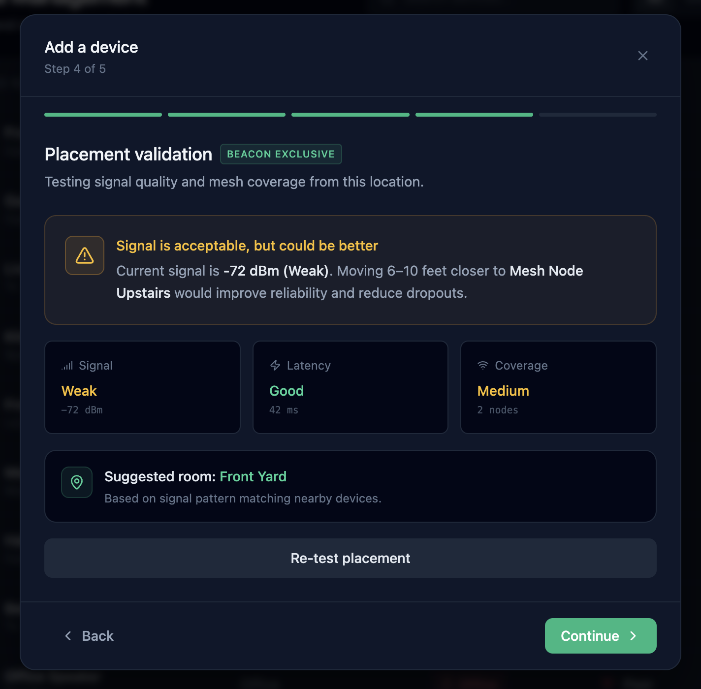
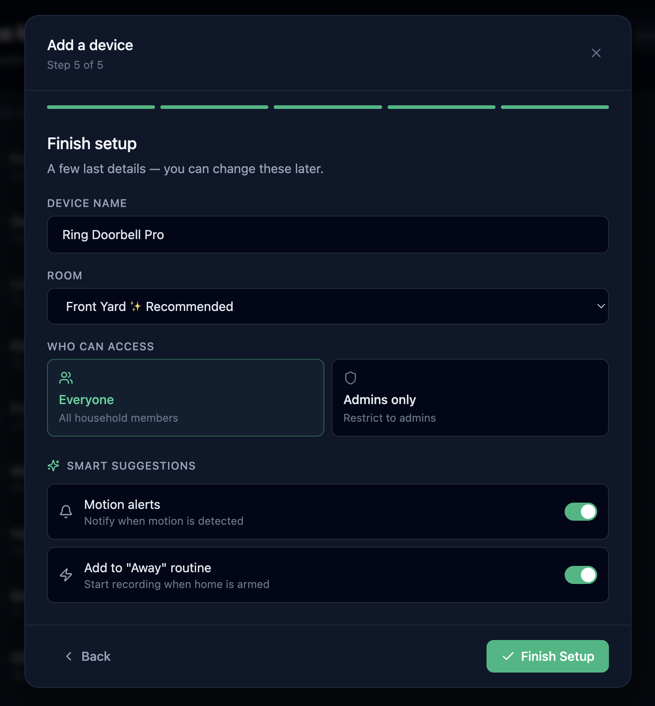
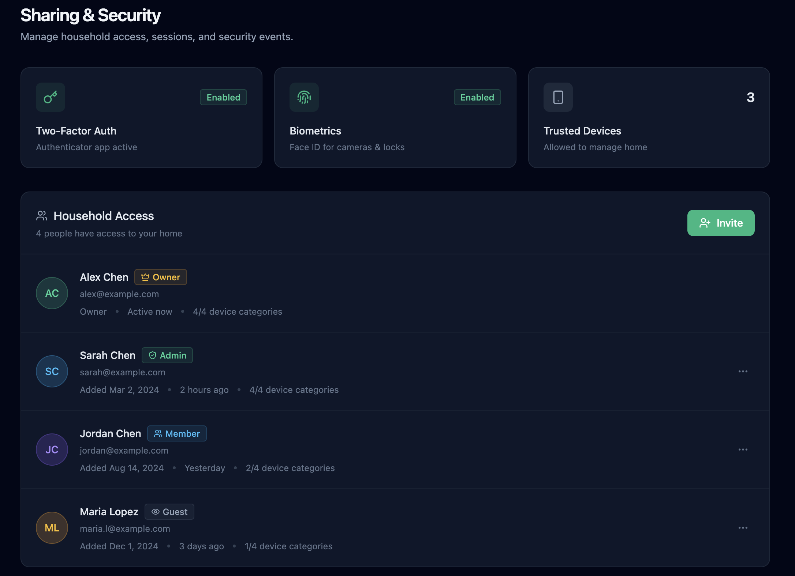
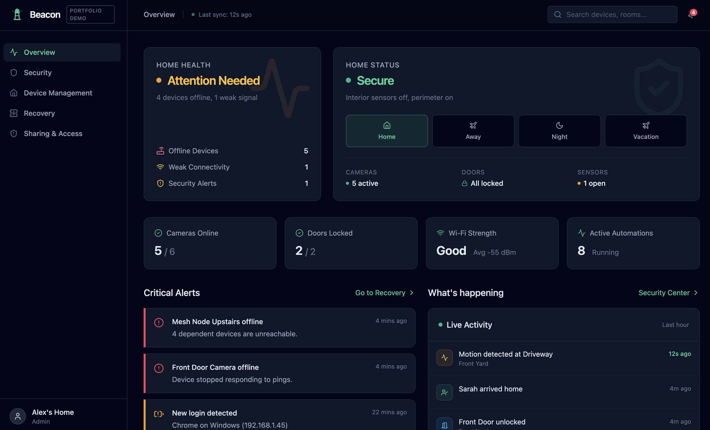

Beacon
A smart home operating system designed around reliability, visibility, and recovery — not just device control.
Most smart home apps fail at the moment you need them most: when your network changes.

Overview
The core insight behind Beacon was personal: after my ISP technician visited a few times, the network got reset — and I spent the rest of the evening individually re-pairing 15 Ring cameras, Alexas, smart TVs, and a Google Home through their respective apps. Each one took five minutes of fumbling through different setup flows. None of the apps acknowledged that this was happening across my whole house. None of them could fix it in bulk.
The smart home category is dominated by:
- Alexa-style ecosystems — voice-first, but operationally opaque
- HomeKit-style controllers — minimal, but blind to network state
- Ring-style silos — great cameras, but isolated
- SmartThings-style platforms — powerful, but overwhelming
Beacon answers a different question:
“What is actually happening in my home right now, and can I trust it?”
It is built around four pillars:
- Home Overview — a single, calm view of system state
- Device Health & Recovery — guided, bulk recovery from network changes
- Security & Trust — operational home security, separated from account security
- Core Device Interactions — focused live views and settings, not endless feature creep

What I Focused On
This project focused less on device-by-device feature parity and more on operational coherence across the whole home.
The primary design goal was to make smart home infrastructure feel legible, trustworthy, and recoverable — even when (especially when) something goes wrong.
Key areas:
- Designing a network ops-style dashboard adapted for a domestic context
- Reframing recovery as a workflow rather than a diagnostic
- Creating dependency-aware UX for failures that cascade
- Designing a placement validation flow for new device setup
- Separating operational security (cameras, alarms, modes) from account security (sharing, sessions)
- Maintaining a calm, mature visual system that resists the “gamer dashboard” aesthetic common in this space
Product & UX Decisions
Operational thesis, not device thesis
Most smart home apps organize information by device. Beacon organizes by system state.
The Home Overview leads with two paired vital signs — Home Health (is the infrastructure working?) and Home Status (is the home secure?) — followed by a Quick Status Grid of operational metrics: cameras online, doors locked, Wi-Fi strength, automations running, last sync time.
This was deliberate. The user’s first question on opening the app is rarely “what color is my smart bulb?” It’s “is everything OK?” — and the app should answer that in one glance.
Recovery Center as the differentiator
The original frustration that prompted this project — re-pairing 15 devices after a network reset — became Beacon’s signature feature.
The first version of the Recovery Center I designed was, in hindsight, a diagnostic dashboard. It showed a dependency graph and an empty queue. It was visually correct but emotionally inert.
The breakthrough was reframing recovery as a workflow rather than a view. The current design opens with an incident header that names the problem (“Likely mesh node failure”), states severity, affected count, recovery confidence (94%), estimated time, and a recommended next step. The main panel is a four-step Recovery Plan that runs sequentially with live state per step. A console-style activity log streams progress on the side.
When recovery completes, the summary is honest: “3 recovered cleanly, 1 after retry, 1 automation needs review.” Most apps would say “Done!” — Beacon tells the truth, because trust is the product.
The dependency graph still exists, but it’s been demoted to a collapsible “Technical details” panel. Useful, but not the centerpiece.
Dependency awareness
When devices fail, they often fail in patterns. A mesh node goes down, and four dependent cameras drop with it.
Beacon’s Recovery Center is built to surface this causality explicitly:
“Hallway Camera unreachable because Mesh Node Upstairs is offline.”
Other apps make the user piece this together themselves across 15 disconnect notifications. Beacon groups them, names the root cause, and resolves them in the correct order.
Placement Validation in the Add Device flow
The Add Device flow has a step that — as far as I can tell — no consumer smart home app currently has: Placement Validation.
After Beacon connects to a new device, it runs a diagnostic from the device’s current location and gives a verdict:
“Signal is acceptable, but could be better. Current signal is -72 dBm (Weak). Moving 6–10 feet closer to Mesh Node Upstairs would improve reliability and reduce dropouts.”
The flow shows signal, latency, and mesh coverage measurements, and recommends a room based on signal-pattern matching with neighboring devices.
This step exists because the most common reason a smart device “doesn’t work right” is poor placement — but the user only finds out weeks later, after the camera has been dropping clips for a month. Beacon catches it before the device is even mounted.





Live state on the Overview
Early versions of Beacon felt accurate but cold — like a server status page. The home wasn’t alive in it.
Adding a Live Activity feed alongside Critical Alerts — “Motion detected 12s ago,” “Sarah arrived home,” “Front Door unlocked” — gave the Overview an emotional pulse without sacrificing operational rigor. The home feels inhabited, not just monitored.
Two layers of “security”
Smart home security means two completely different things:
- Operational home security — alarms, cameras, motion sensors, home modes (Home / Away / Night / Vacation)
- Account security — MFA, sessions, who has access, audit logs
Most apps muddle these together. Beacon separates them deliberately:
- Security Center owns the operational layer — modes, live cameras, sensors, emergency actions
- Sharing & Access owns the account layer — household members with roles, active sessions, security events
This was a small information-architecture decision with a big legibility benefit.

Device view as a unified surface
Clicking any device — from the Devices list, the Security Center’s live cameras, or a notification — opens the same Device View. Three tabs: Live, Activity, Settings.
For cameras, the Live tab includes a simulated feed with REC/LIVE indicators, controls for mute, two-way talk, snapshot, and clip recording, plus a 24-hour Connectivity Timeline that visualizes online / unstable / offline states. When the device is offline, the Live tab shows a clear handoff to the Recovery Center instead of an empty black box.
Settings is grouped by concern — General, Notifications, Camera-specific (night vision, motion sensitivity), Sharing, Advanced — with destructive actions visually de-emphasized.
Visual & Interaction Design
The visual system uses:
- A neutral slate base — most of the interface is unsaturated
- Restrained emerald accents for active states and primary CTAs
- A status palette of emerald / amber / rose, used sparingly and meaningfully
- Inter typography with strong hierarchy and uppercase telemetric labels for sections
- Monospaced fonts only where the content is genuinely system output (IPs, MAC addresses, log lines)
- Solid colors throughout — no gradients, no skeuomorphic decoration
The goal was making operational data feel:
- Calm
- Mature
- Trustworthy
- High-density without being cramped
Interaction principles
- Motion reserved for meaningful state changes (recovery progress, tab transitions, drawer reveals)
- Hover states only on actionable elements — never on static info cards
- Progressive disclosure for technical detail (the Recovery dependency graph is one toggle away, not in your face)
- Operational truthfulness in copy — “1 device needs attention” instead of universal success messages

System Thinking
Beacon is currently a frontend concept prototype, but it was designed against realistic operational constraints. The product assumes integration with:
- Mesh router APIs (signal, topology, dependency)
- Device manufacturer SDKs (Ring, Nest, Alexa, etc.)
- Local network discovery (mDNS, SSDP)
- Cloud auth providers (account security)
- A pairing/onboarding protocol that supports placement diagnostics
The hard problem isn’t displaying status — it’s modeling dependency and causality across heterogeneous devices and protocols. A camera dropping offline could mean many things: the device, its parent mesh node, the upstream ISP, an authentication failure, a firmware bug. Beacon’s job is to triage that automatically and present the most likely cause first, with a recovery plan attached.
That triage layer — not the UI — is the real engineering challenge if this were built. The design is structured around its existence.
Trade-offs
This portfolio version intentionally uses:
- A curated mock dataset (~18 devices, one active incident, simulated recovery sequence)
- Constrained flows rather than open-ended configuration
- Simulated camera feeds and signal data
- A pre-built recovery scenario rather than a real diagnostic engine
The goal was prioritizing:
- Interaction quality and motion choreography
- State transitions, especially in the Recovery Center
- The Add Device placement validation flow
- Operational storytelling
…over backend completeness.
Why this approach
A smaller set of highly-polished scenarios — a network change, a placement check, a guided recovery — created a stronger demonstration of Beacon’s thesis than a generic “control your bulbs” demo would have.
Result
Beacon became an exploration of how an industry stuck on device-level features could be reframed around system-level trust. The Recovery Center and Placement Validation flows in particular are the kinds of moments that justify the product’s existence — they solve problems other smart home apps don’t even acknowledge.
The project reflects my interest in building products where:
- UX
- Frontend engineering
- Systems thinking
- Operational design
- Information architecture
…all reinforce each other instead of existing separately.
— Dan Thoreson